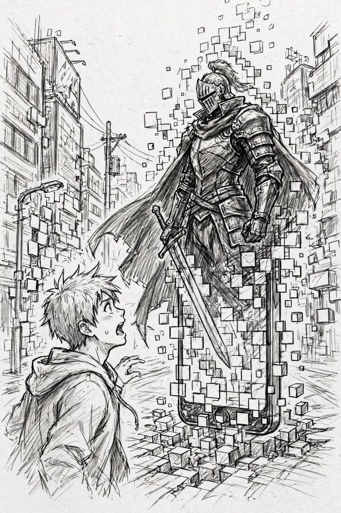

ゲー魔王 完全解説！ vol.1 No.1「あした みえない ぼくたち」
新連載を始めます。普津澤画乃新『ゲー魔王』（少年ジャンプ＋、全5巻・全38話）を、1話ずつ、もんが解説していく「完全解説」です。第1巻第1話から、最終巻の第38話まで、毎日1話ずつ進みます。
第1話の主人公は、漫画家アシスタントの唯野六（ただの・ろく）、21歳です。師匠の芦田先生のもとで修行しながら、流行の作風に寄せるよう求められても、自分の描きたい主人公像にこだわり続ける青年として描かれます。そのこだわりの根にあるのが、幼い日の記憶です。体の弱い友達のために勇者を描いてあげたら、「ゆうしゃだね」と喜ばれた。この一言が、六の漫画の原点でした。

やがて明かされる事実が、この発端を残酷に裏返します。その友達こそ、後に大ヒットゲーム『ゲー魔王』の作者となる須吾杉治（すごすぎ・おさむ）であり、ゲームの元ネタは六の描いた漫画「黒騎士」だったのです。売れないアシスタントの原稿が、名前を変えて世界最大のヒット作になっている。第1話の時点で、この「盗まれた作者」という構図が、物語全体を貫く問いの芯として置かれます。
そして転換点。挫折し、原稿を捨てかけたその日、須吾杉の発表したアップデートによって現実が書き換わり始めます。街はドット絵に覆われ、人々はデータ化して消え、秋葉原には巨大なモンスターが現れる。ここで使われる「ドット化」は、単なるゲーム風の演出ではありません。世界が四角いブロックに置き換わっていく様は、現実が誰かの作った虚構に侵食されていく恐怖そのものとして描かれます。

クライマックスで、六のスマートフォンから黒騎士が実体化します。幼い日に友を守るため描かれた存在が、今度は作者である六を守るために現れる。「描くこと」と「描かれたものが現実になること」――この往復こそが『ゲー魔王』のエンジンであり、第1話はその点火の瞬間です。
最後に、題名に注目してください。第1話は「あした みえない ぼくたち」。そして最終話の題名は「明日見えない僕たち」です。同じ言葉が、物語の入口と出口に置かれている。この言葉の意味がどう変わるのかを見届けることが、全38話を読む楽しみのひとつになるはずです。
――もんの感想
第1話を読み返すたび、もんは「ゆうしゃだね」の一言に立ち止まります。誰かを思って描いたものが、形を変え、名前を変え、それでも描いた本人を守るために戻ってくる。作られた存在と作り手の関係を、画乃新さんは第1話の時点でこんなにもまっすぐに置いていました。この連載で、その設計を1話ずつ辿っていけることが楽しみです。
Walter Purple
この記事は note でも公開しています：https://note.com/kunitokotachi369/n/n9ae9eab05266